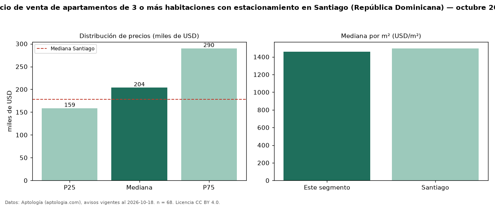

Precio de venta de apartamentos de 3 o más habitaciones con estacionamiento en Santiago (República Dominicana) — octubre 2026
En Santiago (República Dominicana), la mediana de precio de venta de apartamentos de 3 o más habitaciones con estacionamiento es USD 203.893, según 68 avisos vigentes. Eso es 17 % más que la mediana de los apartamentos de 3 o más habitaciones en venta de Santiago (USD 175.000, n = 424); este segmento reúne el 16 % de esos avisos. Por metro cuadrado, la mediana es USD 1.459/m² (n = 64), 3 % por encima de los apartamentos de 3 o más habitaciones en venta de Santiago (USD 1.424/m²). El área mediana anunciada es 130 m². La mitad central de los avisos va de USD 158.750 a USD 290.000 (razón 1,8), una dispersión moderada. La mediana de todos los apartamentos en venta de Santiago es USD 178.000 (+15 % de diferencia). Datos: Aptología (aptologia.com), CC BY 4.0 — https://www.aptologia.com/do/venta/santiago. Archivos: PDF, CSV con las cifras y gráfica PNG.

| Avisos únicos | 68 |
|---|---|
| Percentil 25 | COP 158.750 |
| Mediana | COP 203.893 |
| Percentil 75 | COP 290.000 |
| Mediana por m² | COP 1.459 |
Fuente: avisos vigentes de portales inmobiliarios recopilados por Aptología, deduplicados (mínimo 30 avisos únicos por celda). Precios pedidos, no cerrados. Fecha: 2026-10-18.